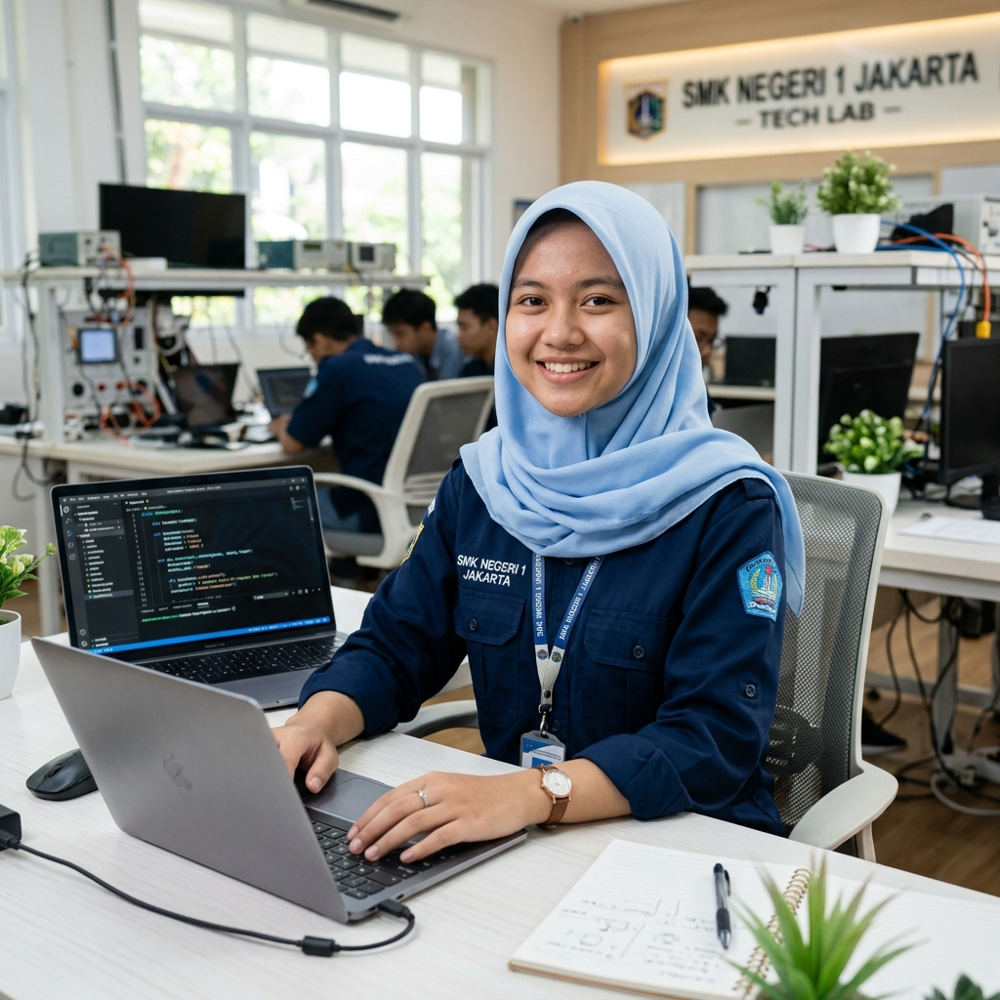
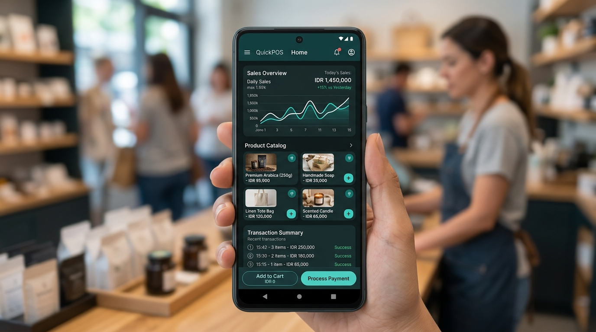
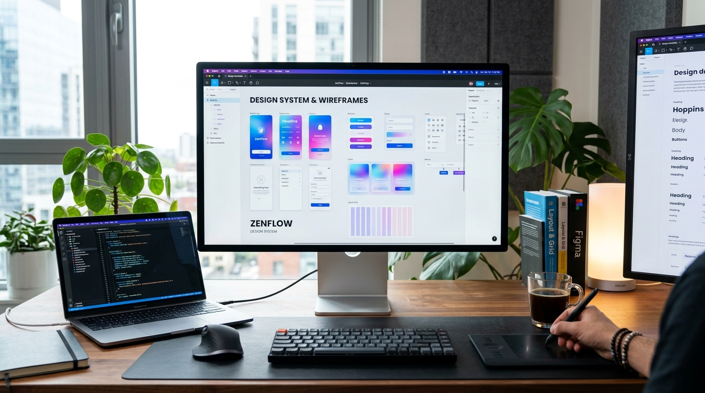

Halo, Saya
Siti Rizquna Zulia Arsya
Siswi jurusan Rekayasa Perangkat Lunak (RPL) dengan dedikasi tinggi dalam pengembangan aplikasi, logika pemrograman, dan desain UI/UX. Berbekal karakter disiplin dari organisasi Pleton Inti, saya berkomitmen menciptakan solusi digital inovatif dan siap melangkah menuju masa depan sebagai seorang Wirausahawan (Techpreneur).

Mengenal Lebih Dekat Tentang Saya
Kombinasi antara presisi logika rekayasa perangkat lunak, kepekaan desain antarmuka, dan karakter kepemimpinan yang tangguh.
Saya adalah seorang siswi aktif di SMK Negeri Tembarak yang mengambil spesialisasi Rekayasa Perangkat Lunak (RPL) di kelas XI RPL B.
Bagi saya, dunia teknologi bukan sekadar menulis baris-baris kode, melainkan seni memecahkan masalah nyata yang dihadapi orang di sekitar kita. Saya memiliki ketertarikan mendalam dalam menciptakan aplikasi mobile menggunakan Kotlin, merancang arsitektur basis data yang efisien, dan menyusun antarmuka pengguna yang memikat di Figma.
Pengalaman saya di organisasi Pleton Inti telah membentuk pribadi saya menjadi individu yang tepat waktu, tahan banting, memiliki integritas tinggi, serta sanggup bekerja sama dalam regu yang dinamis. Nilai-nilai inilah yang menjadi modal utama saya untuk meraih cita-cita sebagai seorang Wirausahawan (Entrepreneur) digital yang sukses.
Disiplin & Jiwa Kepemimpinan
Terlatih melalui kegiatan Pleton Inti untuk selalu konsisten, fokus pada detail, serta memiliki mentalitas pantang menyerah.
Kreativitas & Solusi Digital
Mampu menerjemahkan kebutuhan fungsional menjadi antarmuka yang ramah pengguna (UI/UX) dan sistem aplikasi yang handal.
Orientasi Kewirausahaan
Melihat setiap peluang dan masalah sebagai bibit ide bisnis yang dapat diselesaikan dengan sentuhan teknologi modern.
Riwayat Pendidikan
Menimba ilmu kejuruan dan mengasah keahlian teknis secara berkesinambungan.
SMK NEGERI TEMBARAK
Pemrograman Mobile & OOP
Mempelajari paradigma pemrograman berorientasi objek serta pengembangan aplikasi Android berbasis Kotlin modern.
Teknologi Web & UI/UX
Mendalami struktur web semantik HTML5, CSS layouting modern, serta pembuatan prototype desain produk digital di Figma.
Arsitektur Basis Data
Merancang skema database relasional (RDBMS), normalisasi data, serta eksekusi kueri SQL untuk pengelolaan informasi terstruktur.
Keahlian & Kompetensi
Rangkaian keahlian yang terus saya asah dalam perjalanan sebagai calon pengembang perangkat lunak.
CODING
Penguasaan logika algoritma, struktur data dasar, pemecahan masalah (problem solving), dan implementasi clean code.
FIGMA
Merancang wireframe, user flow, interaktif prototype mobile & web, serta membangun design system dengan prinsip UI/UX human-centered.
KOTLIN
Pengembangan aplikasi Android native modern menggunakan Kotlin, integrasi layout XML, ViewBinding, dan manajemen siklus hidup aplikasi.
HTML
Menyusun struktur web semantik HTML5, aksesibilitas konten, integrasi komponen multimedia, serta optimasi SEO yang terstandar.
DATABASE
Perancangan ERD (Entity Relationship Diagram), pengolahan data SQL (DDL, DML), normalisasi tabel relasional, serta integrasi data lokal SQLite.
Pengalaman & Kegiatan
Membangun kepribadian tangguh dan kepemimpinan berintegritas melalui wadah organisasi.
Hasil Karya & Proyek
Koleksi karya praktikum dan proyek inovatif yang telah saya kembangkan.

Kotlin & SQLiteQuickPOS - Aplikasi Kasir UMKM Mobile
Aplikasi sistem kasir digital berbasis Android yang dirancang untuk membantu efisiensi para pelaku usaha mikro. Dilengkapi fitur pencatatan transaksi real-time, katalog produk, dan laporan omzet harian.

UI/UX DesignZenFlow - E-Commerce UI Kit & Prototype
Perancangan sistem antarmuka komprehensif untuk platform belanja online lokal. Memiliki integrasi komponen reusable, alur checkout intuitif, dan adaptasi tema glassmorphism modern.
Portal Interaktif & Portofolio Personal
Pengembangan landing page responsif dengan performa tinggi tanpa framework bloated. Menampilkan arsitektur semantik HTML5, CSS kustom dengan tema dinamis, serta navigasi interaktif.
Sistem Basis Data Inventaris Sekolah
Perancangan struktur basis data relasional untuk sistem pencatatan logistik dan alat praktikum laboratorium RPL. Menyajikan skema relasi teruji dan query SQL yang optimal.
Prestasi & Apresiasi
Buah dari kedisiplinan berorganisasi dan ketekunan belajar di bidang teknologi informasi.
Prestasi Pleton Inti (Baris Berbaris)
Meraih penghargaan dalam ajang kompetisi baris-berbaris dan upacara bersama kontingen Pleton Inti, mengukir prestasi berkat kekompakan dan disiplin tinggi.
Kompetisi Desain UI/UX & Kreativitas Digital
Menampilkan karya desain antarmuka aplikasi berkonsep ramah pengguna dalam kegiatan pameran karya kejuruan RPL SMK Negeri Tembarak.
Siswa Berprestasi Akademik Kejuruan
Konsisten mempertahankan dedikasi belajar dan performa praktik pemrograman di kelas XI RPL B SMK Negeri Tembarak dengan nilai unggul.
Menjadi Seorang
Wirausahawan (Techpreneur)
Cita-cita utama saya adalah mendirikan dan mengelola usaha berbasis teknologi yang mandiri. Mengintegrasikan kemampuan software engineering dengan naluri bisnis untuk menciptakan produk digital yang memberdayakan UMKM di daerah saya.
Mari Bermitra & BerkolaborasiHubungi Saya
Terbuka untuk diskusi proyek, kerja sama kewirausahaan, magang industri, atau sekadar bertukar sapa.
Mari Berdiskusi & Berkolaborasi!
Saya dapat dihubungi secara langsung melalui saluran WhatsApp atau informasi kontak di bawah ini:
Hubungi via WhatsApp Sekarang